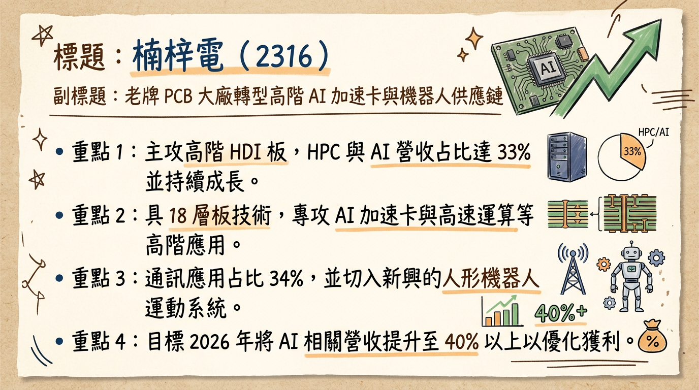
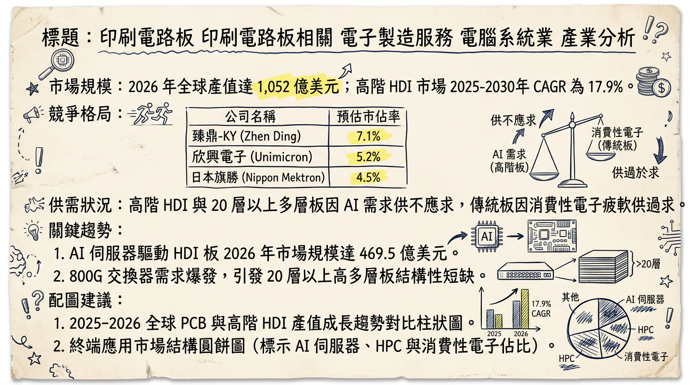
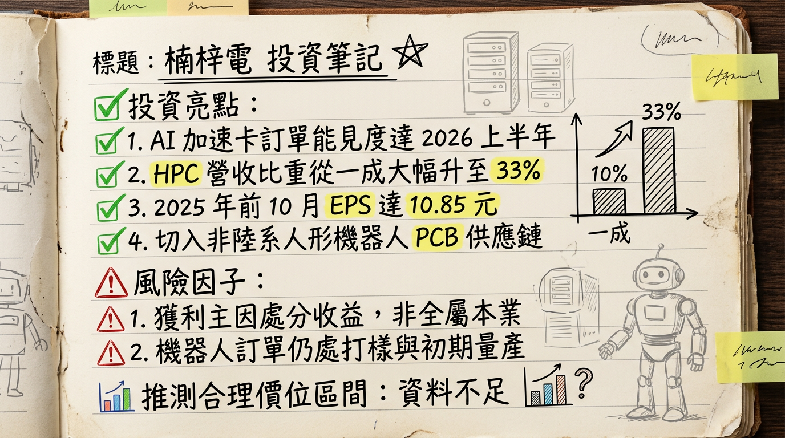

2316 楠梓電 深度研究報告
一句話摘要
楠梓電（2316）正處於從傳統消費電子轉型至 AI 加速卡與高階 HDI 的收割期，憑藉業外轉投資滬士電（WUS）的巨額收益支撐轉型，2026 年本業有望隨產能開出轉虧為盈。
公司概覽
楠梓電為台灣資深 PCB 大廠，生產基地主要位於台灣楠梓及中國昆山。目前產品重心已從低階多層板全面轉向 10-18 層高階 HDI 板。
業務營收結構（截至 2025 Q3）
| 業務/應用領域 | 營收佔比 | 備註 |
|---|
| 高效能運算 (HPC) / AI | 33% | 主供 PCIe 加速卡，2026 目標 >40% |
| 通訊應用 | 34% | 包含網路設備、交換機 |
| 微機電 (MEMS) | 13% | 穩定貢獻來源 |
| 工業電子 | 9% | - |
| GPS / 車用 / 醫療 | 16% | 車用佔 7%，毛利較穩定 |
| 人形機器人 | 微量 | 2026 年新增動能 |
核心競爭優勢
高階 HDI 技術轉型： 成功卡位 AI 資料中心所需的 PCIe FPGA 加速卡（12-18 層板），技術規格與一線大廠接軌。
強大的業外投資護城河： 持有全球 AI PCB 龍頭「滬士電子」(WUS) 約 11.5% 股權，不僅貢獻穩定投資收益，更具備技術研發的聯動優勢。
人形機器人先行者： 已切入海外非中國品牌人形機器人運動控制系統供應鏈，具備先發優勢。
財務分析
近 6 個月月營收趨勢
| 月份 | 營收金額 (億元) | 月增率 (MoM) | 年增率 (YoY) |
|---|
| 2026/01 | 3.79 | -1.03% | +37.15% |
| 2025/12 | 3.83 | -0.04% | +24.41% |
| 2025/11 | 3.83 | +5.69% | +41.14% |
| 2025/10 | 3.62 | -7.54% | +5.30% |
| 2025/09 | 3.92 | +35.45% | +61.73% |
| 2025/08 | 2.89 | -1.09% | -12.75% |
- 2024 全年： 營收 33.32 億元，EPS 4.28 元。
- 2025 全年 (預估)： 營收 37.47 億元，EPS 約 12.25 元（含處分滬士電利益）。
- 2026 展望： 本業力拼轉盈，預估營收維持 10% 以上雙位數成長。
法說會重點（2025-12-11）
- 訂單能見度： AI 加速卡訂單已直達 2026 年上半年，需求極其強勁。
- 產能利用率： 目前廠房仍有 15%-20% 擴充空間，2026 年資本支出將聚焦於解決 HDI 濕製程瓶頸。
- 營運目標： 2026 年目標單月營收回到 4.5 億元 水準，並正式實現本業損益兩平。
- 人形機器人： 管理層證實已進入打樣與初期量產，視為 2026 年後長期增長引擎。
券商觀點
| 券商名 | 目標價 | 評等 | 日期 | 備註 |
|---|
| 北城證券 | 113.05 元 | 列入追蹤 | 2026-02-24 | 關注人形機器人題材 |
| 康和證券 | 127.00 元 | 買進 | 2025-12-15 | 看好 AI/HPC 佔比提升 |
| 市場綜合評估 | 157.00 元 | 強烈買進 | 2026-02-04 | 基於 2026 預估 20x PE |
| ⚠️ 舊資料 | 65.00 元 | 中立 | 2025-07-15 | ⚠️ 過時，未反映轉型 |
財報深度分析
利潤率趨勢表格
| 季度 | 毛利率 | 營業利益率 | 稅後淨利率 | 主要驅動因素 |
|---|
| 2025 Q3 | -0.31% | -13.75% | 96.69% | 處分滬士電股權利益 |
| 2025 Q2 | -8.28% | -20.59% | 97.22% | 轉型期折舊費用高 |
| 2025 Q1 | -1.65% | -13.37% | 30.51% | 消費性電子淡季 |
- 存貨分析： 2025 Q3 存貨週轉天數降至 72.99 天（YoY 優化 25%），顯示庫存管理效能提升。
- 資本支出： 2025 年約 4-6 億，2026 年預計再投入 6-7 億元 用於購買前段高階製程設備。
股權異動
- 處分轉投資： 子公司於 2025 年 6-7 月處分約 1,200 萬股滬士電，套現約 15 億台幣。
- 用途： 該資金明確用於 2025-2026 年的設備汰換與高階 HDI 產能擴充。
- 籌資工具： 目前無發行可轉債 (CB) 或現金增資計畫，財務結構穩健（負債比 32.81%）。
產業分析
全球 PCB 市場格局 (2025-2026 預估)
| 公司名稱 | 全球市佔 | 2025 預估毛利 | 技術重心 |
|---|
| 臻鼎-KY | 9.0% | 18% - 22% | 蘋果供應鏈、軟板 |
| 欣興 | 6.5% | 22% - 25% | ABF 載板、AI 伺服器 |
| 金像電 | ~2% | 28% - 30% | 高多層板、800G 交換機 |
| 楠梓電 | <1% | -3% ~ 5% | 高階 HDI、PCIe 加速卡 |
- 產業趨勢： 全球 PCB 2026 年產值預計達 1,052 億美元，其中 HDI 複合增長率 (CAGR) 達 17.9%，楠梓電正處於此成長賽道。
近期催化劑
1. 2026 Q2 新產能到位，Q3 開始貢獻營收。
2. 人形機器人客戶訂單放量（預計 2026 H2）。
3. 轉投資滬士電 H 股掛牌計畫進度更新。
1. 本業毛利率回升速度慢於預期。
2. 美中貿易對昆山廠 PCBA 組裝的關稅風險。
⭐ 成長動能時間軸
- 2025 Q4： AI/HPC 營收佔比確認突破 33%，本業虧損大幅收斂。
- 2026 Q1： 人形機器人控制系統 PCB 進入小規模量產。
- 2026 Q2： 資本支出採購之高階 HDI 設備全數到位並進行裝機調試。
- 2026 Q3： 關鍵轉折點。 新產能正式開出，本業毛利率力拼轉正，AI 佔比目標衝刺 40%。
- 2026 Q4： 受惠於 800G 交換機與高階伺服器需求，單月營收挑戰 4.5 億元。
2026 展望
- 成長動能： AI 加速卡需求爆發式成長，加上轉投資滬士電泰國廠產能開出，帶動權益法認列收益。
- 風險： 需觀察 HDI 板生產良率是否能從現行的 75-80% 提升至 90% 以上，此為本業轉盈的關鍵。
投資結論
評價體系轉移： 市場正將楠梓電從「業外收成股」重新定義為「AI/機器人成長股」，有利於本益比 (PE) 擴張。
獲利體質改善： 雖 2026 年缺乏大規模處分利益，但本業獲利（EPS 預估 4.5-5.5 元）將更具品質，支撐長期股價。
業外價值支撐： 持有的滬士電股權價值即接近楠梓電市值的一半以上，提供強大的安全邊際。
建議目標價區間： 基於 2026 年轉型成功預期，給予 18x-22x PE，建議操作區間為 115 元 - 145 元，跌破百元具備長期投資價值。
本報告由 AI 自動產生，資料來源為公開網路資訊，僅供參考，不構成投資建議。產生時間：2026-03-01 02:10
📊 資訊卡


